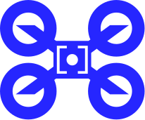
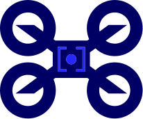
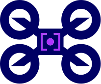

složené — blue, zaměřovač 0.38
složené — blue, zaměřovač 0.38

složené — blue, zaměřovač 0.44

navy + blue akcent
negativ na navy

navy + fialová (původní barvy)
n1 — zářez 22 % šířky, hloubka 12 %
n1 na navy
n2 — hlubší 16 %
n3 — užší 16 % šířky